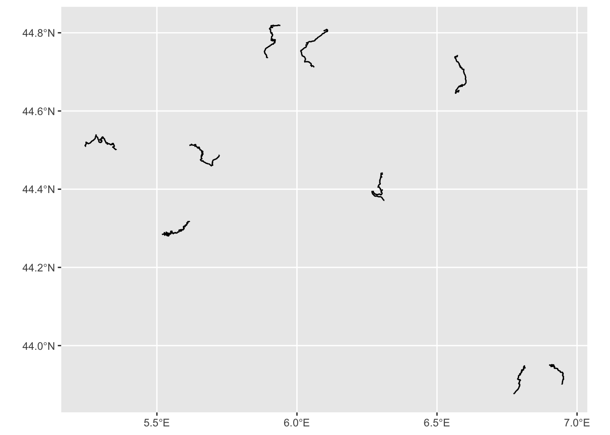
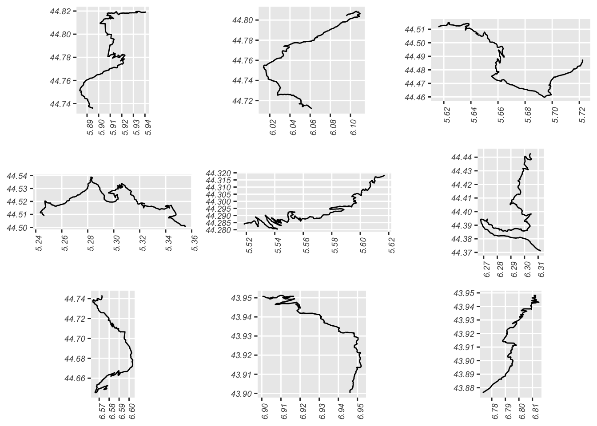
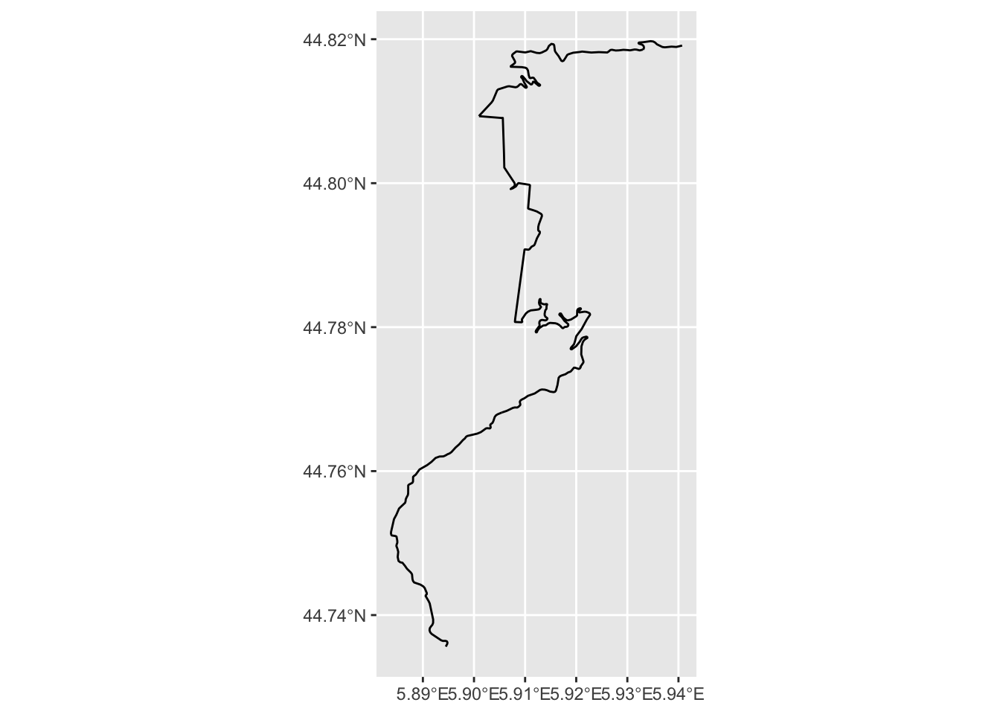
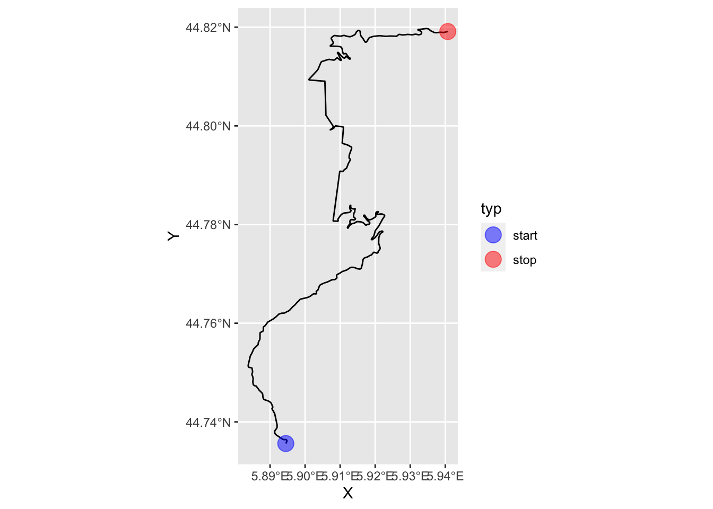
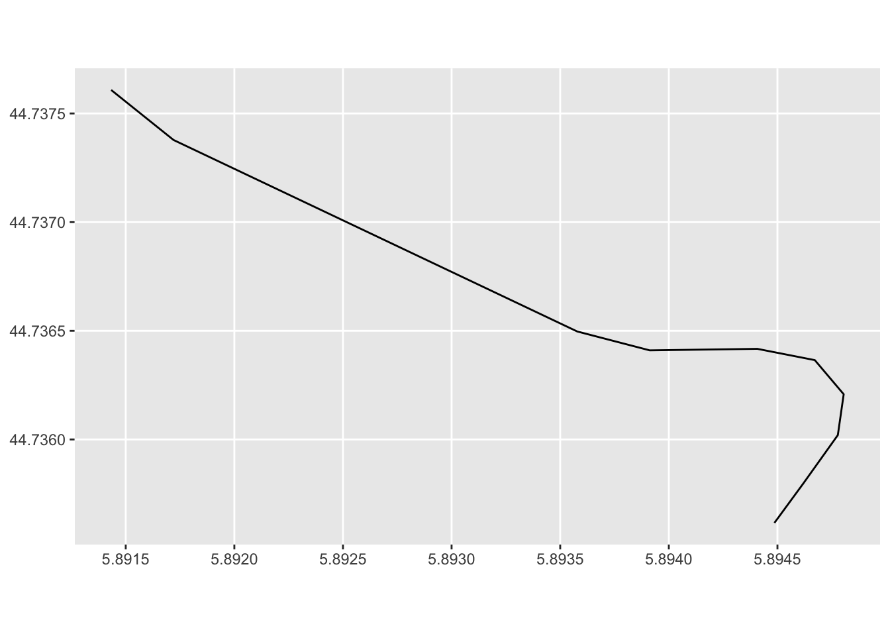
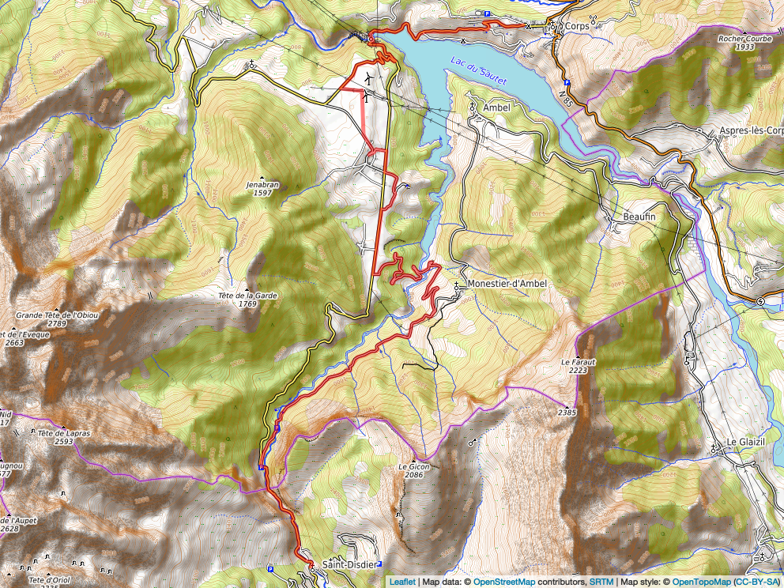

4 Working with Route Data
Having learned how to load in the route data in the previous chapter, we’ll use this chapter to explore in a little bit more detail what we can actually do with it.
4.1 Loading in the Route Data
Each chapter in this book is intended to be self-contained in terms of the code contained within the chapter. So we’ll need to start by loading the data in.
For convenience, I’ll load the data in from the geojson file that we created from the original KML data file in the previous chapter.
library(sf)
# We previously converted the KML file to a geojson file
geojson_filename = 'montecarlo_2021.geojson'
# The geojson file contains essentially the same data (except the zeroed Z values)
# as the original KML file
geojson_sf = st_read(geojson_filename)## Reading layer `montecarlo_2021' from data source `/Users/tonyhirst/Documents/GitHub/visualising-rally-stages/montecarlo_2021.geojson' using driver `GeoJSON'
## Simple feature collection with 9 features and 2 fields
## geometry type: LINESTRING
## dimension: XY
## bbox: xmin: 5.243488 ymin: 43.87633 xmax: 6.951953 ymax: 44.81973
## geographic CRS: WGS 84Howsoever we have loaded in the data, we should have some sort of data structure that contains one or more routes. In the case of our loaded in KML file, or the geojson object, each route is presented in the form of a linestring, made up as a list of consecutive co-ordinate pairs along the route.
To simplify the view of the data we might expect to see, let’s cast the original KML object obtained from the WRC KML file directly into a dataframe:
kml_df = as.data.frame(geojson_sf)
kml_df## Name Description geometry
## 1 SS 1 LINESTRING (5.894486 44.735...
## 2 SS 2 LINESTRING (6.09604 44.8040...
## 3 SS 3/6 LINESTRING (5.722938 44.487...
## 4 SS 4/7 LINESTRING (5.355052 44.500...
## 5 SS 5 LINESTRING (5.518181 44.283...
## 6 SS 9/11 LINESTRING (6.30413 44.4428...
## 7 SS 10 LINESTRING (6.57791 44.6499...
## 8 SS 12/14 LINESTRING (6.900294 43.950...
## 9 SS 13/15 LINESTRING (6.77335 43.8763...4.2 Access a specific stage
We can access a specific stage, which is to say, a specific row of the features dataframe, by direct indexing:
geojson_sf[3,]## Simple feature collection with 1 feature and 2 fields
## geometry type: LINESTRING
## dimension: XY
## bbox: xmin: 5.615949 ymin: 44.45972 xmax: 5.722938 ymax: 44.5148
## geographic CRS: WGS 84
## Name Description geometry
## 3 SS 3/6 LINESTRING (5.722938 44.487...We can find the length of each stage route using the sf::st_length() function:
st_length(geojson_sf)## Units: [m]
## [1] 21069.62 21343.85 20378.19 21983.22 22858.86 18649.37 21220.66 13185.96
## [9] 14850.85Or the length of a specific stage:
st_length(geojson_sf[1,])## 21069.62 [m]# 21069.62Note that you may need to take this distances with a pinch of salt. The WRC website gives the stage length of SS1 as 20.58 km, for example, not 21.07 km, so it’s not clear whether the route in the KML file is the competitive route, or whether is starts and finishes with time controls at either end of the route. It may be that the stage distance also follows the racing line, which is likely to be shorter than than the piecewise linear route we access from the KML file.
There are also several different ways in which we can calculate the distance each of which may have slightly different parameter settings baked in, such as the distance round the equator, that are likely to influence the result of any distance calculations we perform.
It is also worth noting that elevation changes mean that the actual route length is likely to be greater than the distance measured over a 2 dimensional route in the XY (longitude-latitude) plane.
4.3 Visual Preview of Route Geodata
Let’s generate a quick preview of all the stages. The dataframe contains a column of encoded linestrings. We can preview these directly with a simple plot:
plot(st_geometry(geojson_sf))This shows the rough outline of each stage, and their relative positions, but represents little more than a back of a napkin sketch.
4.4 Previews using ggplot2
In some circumstances, we may want to work with the route data in ggplot2.
The ggplot2 package is aware of simple features (sf) representations, although we need to inform it that such a dataset has been provided via the ggplot2::geom_sf() function.
We can preview the data as follows, firstly over all features:
# https://ggplot2.tidyverse.org/reference/ggsf.html
library(ggplot2)
ggplot(data=geojson_sf) + geom_sf()
Note how the co-ordinate axes are rendered in degrees longitude (x coordinate) and degrees latitude (y co-ordinate) using a familiar projection (that is, the x and y axes are in a proportion that you are likely to recognise from most atlases and (web) maps).
The ggpubr::ggarrange() function allows us to create an arrangement of plots made up from a list separate plot for each stage. We can also take the opportunity to demonstrate how we might start styling the x-tick labels using the axis.text.x parameter to the ggplot::theme():
stageplot = function(x, output) {
ggplot(data=x) + geom_sf() +
theme(axis.text.x = element_text(angle = 90,
face='italic', size = 7),
axis.text.y = element_text(face='italic', size = 7))
}
stages_kml = kml_df$geometry
#apply(X, MARGIN, FUN, …)
ggpubr::ggarrange(plotlist=lapply(stages_kml, stageplot))
We can visualise the data for just a single route by limiting the data we pass to the ggplot() function:
g = ggplot(data=geojson_sf[1,]) + geom_sf()
g
In rendering this map, note how we can assign the plot to a variable (g) and then display the map by referencing the variable.
4.5 Identifying the Start and End of the Stage
We can grab the co-ordinates of locations at the start and end of the stage, assuming that the linestrings are presented in the order start-finish:
stage_coords = as.data.frame(st_coordinates(kml_df[1, ]$geometry))
stage_start_coords = stage_coords[1, ]
stage_end_coords = stage_coords[nrow(stage_coords), ]
first_and_last = stage_coords[c(1,nrow(stage_coords)),]
first_and_last$label=c('SS1 stage start', 'SS1 stage end')
first_and_last$typ=c('start', 'stop')
first_and_last$color=c('green', 'red')
first_and_last## X Y L1 label typ color
## 1 5.894486 44.73562 1 SS1 stage start start green
## 419 5.940715 44.81912 1 SS1 stage end stop redWe can then highlight these features on our stage plot:
g +
geom_point(aes(x=X, y=Y, color = typ),size =5, alpha = 0.5,
data=first_and_last) +
scale_color_manual(values=c("blue", "red"))
4.6 Extracting Route Fragments
We can readily extract a fragment from a line by indexing against the line segment indices. For example, to gran the first 10 straighline segments from the linestring we can extract just those coordinates and build a new linestring from them:
cc = as.data.frame(st_coordinates(geojson_sf[1,]))[1:10,]
route_segment = st_linestring(cbind(x=cc[,1], y=cc[,2]))
# We can plot the linestring using the same sort of geo projection
# as was applied to the original route
ggplot(route_segment) + geom_sf(crs=st_crs(geojson_sf[1,]))
4.7 Previews Using leaflet Interactive Maps
Simple plots of the route gives us a snapshot of the shapes of various routes and their relative positioning, but it’s far more useful to preview the routes over a simple map background, such as an interactive OpenStreetMap map.
The leaflet package provides a range of tools for working with the leaflet Javascript package to visualise such maps.
The leaflet::leaflet function creates interactive maps based around map tiles that can be retrieved from a variety of map tile providers. Some providers may require an API key or access credentials. For moderate use, we can freely access OpenStreetMap or Stamen tiles in a variety of themes without any form of authentication:
library(leaflet)
# Alternatively, we might set:
# stages_kml = kml[,'geometry']
# Note that leaflet seems to requires us to to have dropped
# the Z and M dimensions from the linestrings
leaflet(stages_kml) %>%
addProviderTiles("Stamen.TonerLite",
# Other themes include:
# Stamen.TonerLite, Stamen.Terrain, OpenStreetMap.Mapnik
# Stamen.TerrainBackground, OpenTopoMap
group = "OSM") %>%
addPolylines(color = "red", weight = 3)The Stamen.TonerLite theme is very clear for identifying where the stages are whilst the OpenTopoMap and Stamen.TerrainBackground themes are using for showing relief, particularly in mountainous or hilly stages.
As well as previewing all the stage routes in the features collection, we can extract the linestring geometry for a single route:
kml_geom = kml_df[1, ]$geometry
kml_geom## Geometry set for 1 feature
## geometry type: LINESTRING
## dimension: XY
## bbox: xmin: 5.883753 ymin: 44.73562 xmax: 5.940715 ymax: 44.81973
## geographic CRS: WGS 84## LINESTRING (5.894486 44.73562, 5.894618 44.7358...# kml_df[kml_df$Name=='SS 1' , ] # Get rowWe can now generate a quick map preview of that particular stage:
leaflet(stages_kml[1]) %>%
addProviderTiles("OpenTopoMap", group = "OSM") %>%
addPolylines(color = "red", weight = 5)We can also highlight the stage start and end points as simple circle markers, as pin “balloon” markers, in this case with a fixed label to annotate the stage start and finish:
# Create a palette that maps factor levels to colors
pal <- colorFactor(c("darkgreen", "darkred"),
domain = c("start", "stop"))
m = leaflet(stages_kml[1]) %>%
addProviderTiles("OpenTopoMap", group = "OSM") %>%
addPolylines(color = "red", weight = 5)
m %>%
addMarkers(~X, ~Y, #popup = ~label,
label = ~label,
labelOptions = labelOptions(noHide = T,
direction = "bottom",
style = list(
"color" = 'black',
"font-family" = "serif",
"font-style" = "italic",
"box-shadow" = "3px 3px rgba(0,0,0,0.25)",
"font-size" = "12px",
"border-color" = "rgba(0,0,0,0.5)"
)),
data=first_and_last) %>%
addCircleMarkers(~X, ~Y, radius =10, color = ~pal(typ),
stroke = FALSE, fillOpacity = 0.5,
data=first_and_last)As well as using default markers, we can define custom markers:
# https://fontawesome.com/v4.7.0/icons/
start_stop_markers <- awesomeIconList(
"start" = makeAwesomeIcon(
icon = "play-circle",
markerColor = "blue",
library = "fa"
),
"stop" = makeAwesomeIcon(
icon = "stop-circle",
markerColor = "red",
library = "fa"
)
)We can add the markers directly to our earlier created leaflet map object:
m %>%
addAwesomeMarkers(~X, ~Y,
icon = ~ start_stop_markers[typ],
label = ~ label,
data=first_and_last)mWe can save a map to an image file using the mapview package:
library(mapview)
# mapview also provides tools for generating leaflet maps from R
image_fn = "demomap.png"
mapshot(m, file = image_fn)We can then review the saved image captured from the map:
knitr::include_graphics(image_fn)
4.8 Creating Buffer regions around features
One thing we note from the map is that the display is cropped quite close to the extent of the displayed stage. It would be useful to provide a small buffer around the stage to provide a margin that allows us to see the start and stop clearly.
We can get the bounds of the stage quite simply:
stage_bbox = st_bbox(stages_kml[1])
stage_bbox## xmin ymin xmax ymax
## 5.883753 44.735616 5.940715 44.819732A convenient way of representing the bounding box is to use the extent() function from the raster package to create an Extent class object:
raster::extent(stage_bbox)## class : Extent
## xmin : 5.883753
## xmax : 5.940715
## ymin : 44.73562
## ymax : 44.81973In some functions, we may be able to pass an extent object in directly as a function argument.
We can also create a dataframe containing those limits:
ex.df <- data.frame(x= c(stage_bbox[['xmin']], stage_bbox[['xmax']]),
y= c(stage_bbox[['ymin']], stage_bbox[['ymax']]))
ex.df## x y
## 1 5.883753 44.73562
## 2 5.940715 44.81973The contents of the dataframe representation can be cast as a spatial points object containing two features, whose extent matches the original extent:
# For SpatialPoints
library(sp)
bb_sp = SpatialPoints(ex.df)
bb_sp## class : SpatialPoints
## features : 2
## extent : 5.883753, 5.940715, 44.73562, 44.81973 (xmin, xmax, ymin, ymax)
## crs : NAThis is useful because we can create a “buffer” region around those points that will “push out” the extent and give us some co-ordinates that represent a buffered area around the original path.
Let’s add a buffer around the trace of five hundred meters:
library(spatialEco)
#In passing, recall that WGS84 (latlon) is st_crs(4326)
proj4string(bb_sp) <- '+proj=longlat +ellps=WGS84 +datum=WGS84 +no_defs'
# Create a new, buffered region
stage_bbox = st_bbox(geo.buffer(x=bb_sp, r=500))
# Also update the dataframe of points with these bounds
ex.df <- data.frame(x= c(stage_bbox[['xmin']], stage_bbox[['xmax']]),
y= c(stage_bbox[['ymin']], stage_bbox[['ymax']]))
stage_bbox## xmin ymin xmax ymax
## 5.877441 44.731117 5.947037 44.824231We can pass these new bounds into the leaflet widget to try to encourage it to show a little more of the map, although noting that it doesn’t always force the issue if the buffer isn’t big enough…
leaflet(stages_kml[1]) %>%
fitBounds(stage_bbox[['xmin']], stage_bbox[['ymin']],
stage_bbox[['xmax']], stage_bbox[['ymax']]) %>%
#fitBounds(5.879966, 44.732916,
# 5.944508, 44.822432) %>%
addProviderTiles("OpenTopoMap", group = "OSM") %>%
addPolylines(color = "red", weight = 5)4.9 Adding Additional Features to leaflet maps
Several packages exist that allow us to add additional controls and features to interactive leaflet maps, including “minimap” navigational support, the ability to add logos and charts to maps, and support for arbitrary HTML and chart content within popups.
4.9.2 Add Custom Symbol Legends
We could add eg rally signs to start and end of stage (and if we have richer detail, radio points, etc). The leaflegend R package provides several utilities for creating custom icons.
Rally stage symbols can be found in various custom fonts such as dafont/rally-symbols or wfonts/rally-symbols.
4.9.2.1 Adding a Logo
The r-spatial::leafem package adds several extension features to leaflet maps. For example, we can add a logo to the map:
img <- "https://acm.mc/wp-content/uploads/2020/04/Plaque-rouge-2021.png"
# Can we control the size? Or do we have to make a square logo?
m %>% leafem::addLogo(img)4.9.3 Adding Mini-Charts to Maps
The leaflet.minicharts R package allows simple charts to be displayed at specific locations on a map.
4.9.4 Adding HTML content to popups
The leafpop R package allows us to add HTML tables, images or graphs to leaflet or mapview popups, as well as ggplot2 graphics and htmlwidgets.
This packages might be useful for adding stage results displays to maps, for example.
4.10 Using mapview To Create leaflet Maps
As well as using the leaflet package to generate leaflet maps, the mapview R package provides an alternative way of .
library(mapview)
mv = mapview(geojson_sf)
mvThe r-spatial/leafem package that we can use to enrich maps using the leaflet package was in part developed as an abstraction of functions contained within the mapview package; both mapview and leafem are maintained by the r-spatial Github organisation.